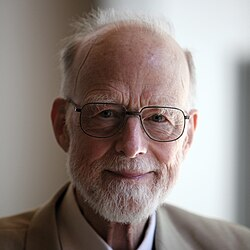

Sir Tony Hoare | |
|---|---|
 Hoare in 2011 | |
| Born | Charles Antony Richard Hoare 11 January 1934 Colombo, British Ceylon |
| Died | 5 March 2026 (aged 92) Cambridge, England |
| Education | Dragon School The King's School, Canterbury |
| Alma mater | University of Oxford (BA, PgDip) |
| Known for | |
| Spouse | Jill Pym |
| Children | 3 |
| Awards |
|
| Scientific career | |
| Fields | Computer science |
| Institutions | |
Doctoral students | |
| Website | www |
{kind=link}
Sir Charles Antony Richard Hoare (/hɔːr/ HOR; 11 January 1934 – 5 March 2026), known as Sir Tony Hoare or C. A. R. Hoare, was a British computer scientist who made foundational contributions to programming languages, algorithms, operating systems, formal verification, and concurrent computing.[4][5] His work earned him the 1980 ACM Turing Award, usually regarded as the highest distinction in computer science.[6][7]
Hoare developed the sorting algorithm quicksort in 1959–1960.[8][2] He developed Hoare logic, an axiomatic basis for verifying program correctness.[9] In the semantics of concurrency, he introduced the formal language communicating sequential processes (CSP) to specify the interactions of concurrent processes, and along with Edsger Dijkstra, formulated the dining philosophers problem.[10][11][12][13][14] From 1977 on, he held positions at the University of Oxford as well as at Microsoft Research in Cambridge.
Early life and education
Tony Hoare was born in Colombo, Ceylon (now Sri Lanka) on 11 January 1934,[6] to British parents; his father was a colonial civil servant and his mother was the daughter of a tea planter. Hoare was privately educated in England at the Dragon School in Oxford and the King's School in Canterbury.[15] He then studied Classics and Philosophy ("Greats") at the University of Oxford as an undergraduate student at Merton College, Oxford.[16] On graduating in 1956, he did 18 months National Service in the Royal Navy,[16] where he learned Russian.[17] He returned to the University of Oxford in 1958 to study for a postgraduate certificate in statistics,[16] and it was here that he began computer programming, having been taught Autocode on the Ferranti Mercury by Leslie Fox.[18] He then went to Moscow State University as a British Council exchange student,[16] where he studied machine translation supervised by Andrey Kolmogorov.[17]
Research and career
In 1960, Hoare left the Soviet Union and began working at Elliott Brothers Ltd,[16] a small computer manufacturing firm located in London. There, he implemented a compiler for the language ALGOL 60 and began developing major algorithms.[19]
Hoare was involved with developing international standards in programming and informatics, as a member of the International Federation for Information Processing (IFIP) Working Group 2.1 on Algorithmic Languages and Calculi,[20] which specified, maintains, and supports the languages ALGOL 60 and ALGOL 68.[21]
Hoare became the Professor of Computing Science at the Queen's University of Belfast in 1968, and in 1977 returned to Oxford as the Professor of Computing to lead the Programming Research Group in the Oxford University Computing Laboratory (now Department of Computer Science, University of Oxford), following the death of Christopher Strachey. He became the first Christopher Strachey Professor of Computing on its establishment in 1988 until his retirement at Oxford in 2000.[22] He was an Emeritus Professor there, and also a principal researcher at Microsoft Research in Cambridge, England.[23][24][25]
Hoare's most significant work has been in the following areas: his sorting and selection algorithm (Quicksort and Quickselect), Hoare logic, the formal language communicating sequential processes (CSP) used to specify the interactions between concurrent processes (and implemented in various programming languages such as occam), structuring computer operating systems using the monitor concept, and the axiomatic specification of programming languages.[26][6]
Speaking at a software conference in 2009, Hoare apologised for inventing the null reference:[27][28]
I call it my billion-dollar mistake. It was the invention of the null reference in 1965. At that time, I was designing the first comprehensive type system for references in an object-oriented language (ALGOL W). My goal was to ensure that all use of references should be absolutely safe, with checking performed automatically by the compiler. But I couldn't resist the temptation to put in a null reference, simply because it was so easy to implement. This has led to innumerable errors, vulnerabilities, and system crashes, which have probably caused a billion dollars of pain and damage in the last forty years.[29]
For many years under his leadership, Hoare's Oxford department worked on formal specification languages such as CSP and the Z notation. These did not achieve the expected take-up by industry, and in 1995, Hoare was led to reflect upon the original assumptions:[30]
Ten years ago, researchers into formal methods (and I was the most mistaken among them) predicted that the programming world would embrace with gratitude every assistance promised by formalisation to solve the problems of reliability that arise when programs get large and more safety-critical. Programs have now got very large and very critical – well beyond the scale which can be comfortably tackled by formal methods. There have been many problems and failures, but these have nearly always been attributable to inadequate analysis of requirements or inadequate management control. It has turned out that the world just does not suffer significantly from the kind of problem that our research was originally intended to solve.
A commemorative article of reminiscences was written in tribute to Hoare for his 90th birthday.[31]
Personal life and death
In 1962, Hoare married Jill Pym, a member of his research team, with whom he had three children.[32] He died on 5 March 2026, aged 92.[33][34][35][2][36]
Awards and honours
- ACM Programming Systems and Languages Paper Award (1973)[37] for the paper "Proof of correctness of data representations"[38]
- Distinguished Fellow of the British Computer Society (1978)[39]
- Turing Award for "fundamental contributions to the definition and design of programming languages". The award was presented to him at the ACM Annual Conference in Nashville, Tennessee, on 27 October 1980, by Walter Carlson, chairman of the Awards committee. A transcript of Hoare's speech[40] was published in Communications of the ACM.[19]
- Harry H. Goode Memorial Award (1981)[41]
- Fellow of the Royal Society (1982)[42]
- Honorary Doctorate of Science by the Queen's University Belfast (1987)[39]
- Honorary Doctorate of Science, from the University of Bath (1993)[43]
- Honorary Fellow, Kellogg College, Oxford (1998)[44][45]
- Knighted for services to education and computer science (2000)[46]
- Kyoto Prize for Information science (2000)[47]
- Fellow[48] of the Royal Academy of Engineering[48] (2005)
- Member of the National Academy of Engineering (2006)[49]
- Computer History Museum (CHM) in Mountain View, California Fellow of the Museum "for development of the Quicksort algorithm and for lifelong contributions to the theory of programming languages" (2006)[50]
- Honorary Doctorate from Heriot-Watt University (2007)[51]
- Honorary Doctorate of Science from the Department of Informatics of the Athens University of Economics and Business (AUEB) (2007)[52]
- Friedrich L. Bauer Prize, Technical University of Munich (2007)[53]
- SIGPLAN Programming Languages Achievement Award (2011)[54]
- IEEE John von Neumann Medal (2011)[55]
- Honorary Doctorate, University of Warsaw (2012)[56]
- Honorary Doctorate, Complutense University of Madrid (2013)[57]
- Royal Medal of the Royal Society (2023)[58]
Books
- Dahl, O.-J.; Dijkstra, E. W.; Hoare, C. A. R. (1972). Structured Programming. Academic Press. ISBN 978-0-12-200550-3. OCLC 23937947.
- Hoare, C. A. R. (1985). Communicating Sequential Processes. Prentice Hall International Series in Computer Science. ISBN 978-0131532717 (hardback) or ISBN 978-0131532892 (paperback). (Available online at http://www.usingcsp.com/ Archived 1 February 2021 at the Wayback Machine in PDF format.)
- Hoare, C. A. R. (1989). C. B., Jones (ed.). Essays in computing science. Prentice Hall International Series in Computer Science. ISBN 978-0-13-284027-9.
- Hoare, C. A. R.; Gordon, M. J. C. (1992). Mechanised Reasoning and Hardware Design. Prentice Hall International Series in Computer Science. ISBN 978-0-13-572405-7. OCLC 25712842.
- Hoare, C. A. R.; He, Jifeng (1998). Unifying Theories of Programming. Prentice Hall International Series in Computer Science. ISBN 978-0-13-458761-5. OCLC 38199961.
References
- ^ a b c Tony Hoare at the Mathematics Genealogy Project
- ^ a b c Wilson, John (3 April 2026). "Robert Fox, Mary Rand MBE, Sir Tony Hoare, Biruté Galdikas". Last Word, Radio 4. UK: BBC. Retrieved 4 April 2026. (14 minutes 50 seconds into the programme, interview with Bill Roscoe.)
- ^ Sampaio, Augusto (1993). An Algebraic Approach to Compiler Design (PDF). www.cs.ox.ac.uk (DPhil thesis). University of Oxford. OCLC 854973008. EThOS uk.bl.ethos.334903.
- ^ Jones, Cliff B.; Misra, Jayadev, eds. (2021). Theories of Programming: The Life and Works of Tony Hoare. New York, NY: Association for Computing Machinery. doi:10.1145/3477355. ISBN 978-1-4503-8728-6. S2CID 238251696.
- ^ Sufrin, Bernard (12 April 2026). "Sir Tony Hoare obituary". The Guardian.
- ^ a b c Jones, Cliff. "C. Antony ("Tony") R. Hoare, United Kingdom – 1980". amturing.acm.org. Association for Computing Machinery. Retrieved 12 March 2026.
- ^ Crick, Tom (2026). "In memoriam: C. A. R. Hoare". The Computer Journal. Oxford University Press. doi:10.1093/comjnl/bxag048.
- ^ "Sir Antony Hoare". Computer History Museum. Archived from the original on 3 April 2015. Retrieved 22 April 2015.
- ^ Hoare, Charles Antony Richard (October 1969). "An Axiomatic Basis for Computer Programming". Communications of the ACM. 12 (10): 576–583. doi:10.1145/363235.363259. S2CID 207726175.
- ^ Tony Hoare author profile page at the ACM Digital Library
- ^ C. A. R. Hoare at DBLP Bibliography Server
- ^ Shustek, L. (2009). "Interview: An interview with C.A.R. Hoare". Communications of the ACM. 52 (3): 38–41. doi:10.1145/1467247.1467261. S2CID 1868477.
- ^ Hoare, C. A. R. (1974). "Monitors: An operating system structuring concept". Communications of the ACM. 17 (10): 549–557. doi:10.1145/355620.361161. S2CID 1005769.
- ^ Bowen, Jonathan (8 September 2006). "Oral History of Sir Antony Hoare". Hoare (Sir Antony, C.A.R.) Oral History, CHM Reference number: X3698.2007. Computer History Museum. Archived from the original on 3 July 2013. Retrieved 18 April 2014.
- ^ Lean, Thomas (2011). "Professor Sir Tony Hoare" (PDF). National Life Stories: An Oral History of British Science. UK: British Library. Archived (PDF) from the original on 15 September 2014. Retrieved 15 September 2014.
- ^ a b c d e Levens, R.G.C., ed. (1964). Merton College Register 1900–1964. Oxford: Basil Blackwell. p. 434.
- ^ a b Hoare, Tony (Autumn 2009). "My Early Days at Elliotts". Resurrection (48). ISSN 0958-7403. Retrieved 27 May 2014.
- ^ Roscoe, Bill; Jones, Cliff (2010). "1 Insight, inspiration and collaboration" (PDF). Reflections on the Work of C.A.R. Hoare. Springer. ISBN 978-1-84882-911-4. Archived (PDF) from the original on 9 October 2022.
- ^ a b Hoare, C.A.R. (February 1981). "The emperor's old clothes". Communications of the ACM. 24 (2): 75–83. doi:10.1145/358549.358561. ISSN 0001-0782.
- ^ Jeuring, Johan; Meertens, Lambert; Guttmann, Walter (17 August 2016). "Profile of IFIP Working Group 2.1". Foswiki. Retrieved 7 October 2020.
- ^ Swierstra, Doaitse; Gibbons, Jeremy; Meertens, Lambert (2 March 2011). "ScopeEtc: IFIP21: Foswiki". Foswiki. Retrieved 7 October 2020.
- ^ "Christopher Strachey Professorship of Computing". Department of Computer Science, University of Oxford. 5 November 2021. Retrieved 18 January 2024.
- ^ "Tony Hoare at Microsoft Research". Microsoft Research. Archived from the original on 12 March 2026. Retrieved 7 May 2026.
- ^ Oral history interview with C. A. R. Hoare at Charles Babbage Institute, University of Minnesota, Minneapolis.
- ^ The original article on monitors: Hoare, C. A. R. (1974). "Monitors: An operating system structuring concept". Communications of the ACM. 17 (10): 549–557. doi:10.1145/355620.361161.
- ^ "Preface to the ACM Turing Award lecture" (PDF). Archived from the original (PDF) on 19 April 2012.
- ^ Hoare, Tony (25 August 2009). "Null References: The Billion Dollar Mistake". InfoQ.com.
- ^ "Null: The Billion Dollar Mistake". hashnode.com. 3 September 2020. Archived from the original on 20 May 2022. Retrieved 23 June 2022.
- ^ Hoare, Tony (2009). "Null References: The Billion Dollar Mistake" (Presentation abstract). QCon London. Archived from the original on 28 June 2009.
- ^ Hoare, C. A. R. (1996). "Unification of Theories: A Challenge for Computing Science". Selected papers from the 11th Workshop on Specification of Abstract Data Types Joint with the 8th COMPASS Workshop on Recent Trends in Data Type Specification. Springer-Verlag. pp. 49–57. ISBN 3-540-61629-2.
- ^ Jifeng, He; Jones, Cliff; Roscoe, Bill; Stoy, Joe; Sufrin, Bernard; Bowen, Jonathan P. (2 July 2024). Denvir, Tim (ed.). "Tony Hoare @ 90" (PDF). FACS FACTS. Formal Aspects of Computing Science (FACS) Specialist Group. pp. 5–42. ISSN 0950-1231. Archived (PDF) from the original on 10 July 2024. Retrieved 10 July 2024.
- ^ Jones, Cliff; Roscoe, A. W.; Wood, Kenneth R., eds. (2010). Reflections on the Work of C.A.R. Hoare. Springer Science. p. 3.
- ^ Spicer, Dag (11 March 2026). "In Memoriam: Sir Antony Hoare (1934–2026)". Computer History Museum. Retrieved 11 March 2026.
- ^ Roscoe, Bill (12 March 2026). "Sir Tony Hoare FRS FREng". Department of Computer Science, University of Oxford. Retrieved 12 March 2026.
- ^ Garfinkel, Simson L.; Spafford, Eugene H. (16 March 2026). "In Memoriam: C.A.R. Hoare". Communications of the ACM. doi:10.1145/3802605.
- ^ Sufrin, Bernard (12 April 2026). "Sir Tony Hoare obituary". The Guardian. Retrieved 26 April 2026.
- ^ "ACM Programming Systems and Languages Paper Award". Association for Computing Machinery. 1973. Retrieved 7 July 2022.
- ^ Hoare, C.A.R. (1972). "Proof of correctness of data representations". Communications of the ACM. 1 (4): 271–281. doi:10.1007/BF00289507. S2CID 34414224.
- ^ a b "Computer Pioneers – Charles Antony Richard Hoare". history.computer.org.
- ^ Hoare, Charles Anthony Richard (27 October 1980). "The Emperor's Old Clothes: The 1980 ACM Turing Award Lecture" (PDF). Association for Computing Machinery. Archived from the original (PDF) on 19 April 2012.
- ^ "Harry H. Goode Memorial Award". IEEE Computer Society. 4 April 2018.
- ^ Anon (1982). "Anthony Hoare FRS". royalsociety.org. London: Royal Society.
- ^ "Honorary Graduates 1989 to present". bath.ac.uk. University of Bath. Archived from the original on 17 July 2010. Retrieved 18 February 2012.
- ^ Wesson, Rupert. "(Charles) Antony Richard (Tony) Hoare Biography".
- ^ "Tony Hoare – Kellogg College". Kellogg College. Archived from the original on 21 January 2025. Retrieved 13 March 2026.
- ^ "No. 55710". The London Gazette (Supplement). 30 December 1999. pp. 1–2.
- ^ "Antony Hoare". 京都賞.
- ^ a b "List of Fellows". Archived from the original on 8 June 2016. Retrieved 17 October 2014.
- ^ "Sir Tony Hoare". NAE Website.
- ^ "Sir Antony Hoare: 2006 Fellow". Archived from the original on 3 April 2015. Retrieved 8 March 2020."Sir Antony Hoare | Computer History Museum". Archived from the original on 3 April 2015. Retrieved 22 April 2015.
- ^ "Annual Review 2007: Principal's Review". www1.hw.ac.uk. Archived from the original on 5 March 2016. Retrieved 29 March 2016.
- ^ "Honorary Doctors of Philosophy at AUEB". Athens University of Economics and Business.
- ^ "Preisverleihung auf der Festveranstaltung "40 Jahre Informatik in München": TU München vergibt Friedrich L. Bauer-Preis an Tony Hoare" (in German). Technical University of Munich. 26 October 2007. Archived from the original on 10 June 2016. Retrieved 14 May 2016.
- ^ "Programming Languages Achievement Award 2011". ACM. Retrieved 28 August 2012.
- ^ "IEEE John von Neumann Medal Recipients" (PDF). IEEE. Archived from the original (PDF) on 9 October 2022. Retrieved 26 February 2011.
- ^ Krzysztof, Diks (15 November 2012). "Profesor Hoare doktorem honoris causa Uniwersytetu Warszawskiego" (in Polish). University of Warsaw. Archived from the original on 26 August 2014. Retrieved 26 November 2012.
- ^ "Los informáticos Tony Hoare y Mateo Valero serán investidos hoy doctores honoris causa por la Complutense" (in Spanish). 10 May 2013. Retrieved 10 May 2013.
- ^ "Royal Medals – Awarded in 2023 – Sir Antony Hoare FREng FRS". Royal Society. Retrieved 12 March 2026.
 This article incorporates text available under the CC BY 4.0 license.
This article incorporates text available under the CC BY 4.0 license.